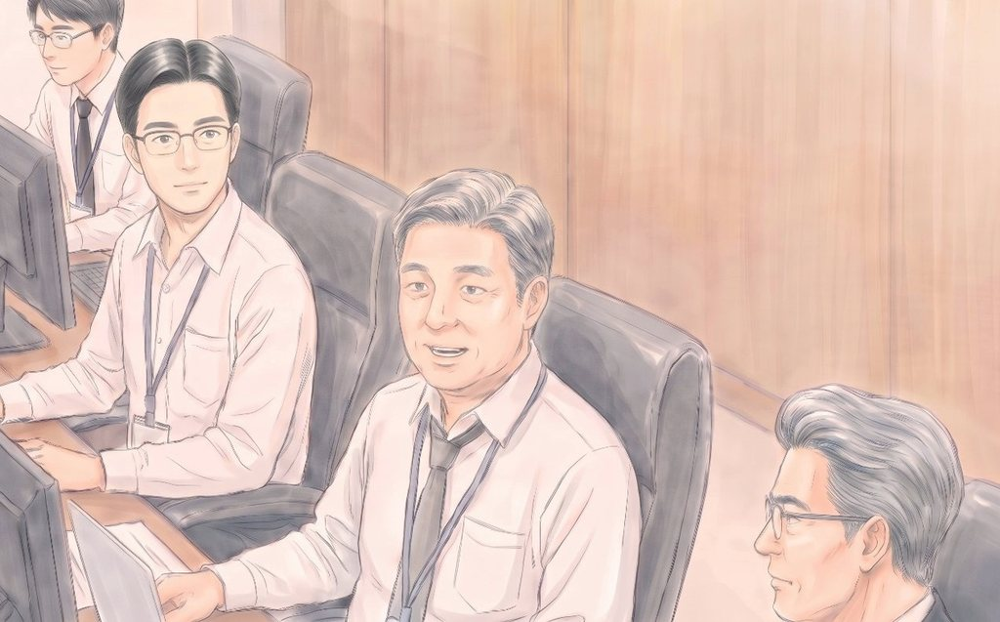
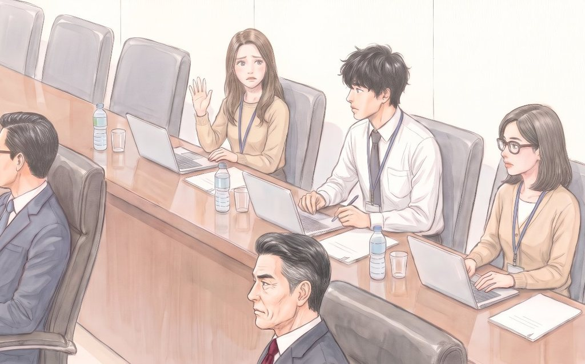
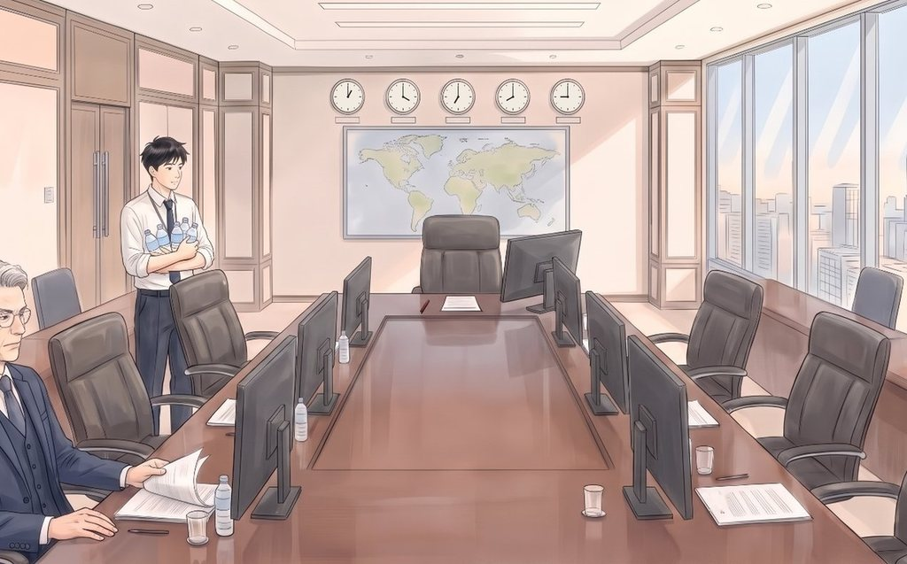

2021년 6월 26일 토요일, 오전 7시. 대회의실.
문혜경은 자리에 앉아 출력본 위의 빨간 볼펜을 집었다. 그런데 뚜껑을 열지 않았다. 볼펜을 테이블 옆으로 내려놓았다.
"오늘은 보고 안 받을게요."
회의실의 열여섯 명이 동시에 고개를 들었다. 권재혁이 출력본을 넘기려던 손을 멈췄다.
"상반기 숫자는 다 알아요. 온라인 성장률 목표 25%, 예상 14%. 미달이에요. 그건 출력본에 있으니까 각자 읽으면 되고."
문혜경은 회의실을 천천히 둘러봤다.
"오늘은 한 사람씩 말해 주세요. 지난 석 달 동안, 일하면서 제일 막혔던 거 하나. 보고서에 안 쓴 거로."
아무도 입을 열지 않았다. 석 달 동안 이 회의실에서 '보고서에 안 쓴 것'을 말한 사람은 없었다.
"권 상무부터 할까요."
권재혁은 잠깐 출력본을 내려다봤다. 그리고 덮었다.
"인도네시아 결제 연동입니다. 현지 간편결제 회사와 계약은 했는데, 본사 정보보안 규정상 해외 결제 데이터를 현지 서버에 둘 수 없습니다. 규정을 바꾸려면 지주사 승인이 필요합니다. 석 달째 결재가 올라가 있습니다."
"어디에 걸려 있어요?"
권재혁이 잠깐 망설였다. 그리고 정확히 말했다.
"지주사 정보보안실입니다."
문혜경의 표정이 아주 조금 굳었다. 지주사는 그녀의 조직이었다.
"다음."
한지석이 이어 받았다.
"브랜드 간 협조입니다. 상세페이지 템플릿을 연휘에 적용하려고 했는데, 연휘는 자체 디자인 가이드가 있어서 적용이 안 됩니다."
엄기태 상무가 팔짱을 꼈다. 한지석은 계속했다.
"엄 상무님 반대가 틀렸다는 게 아닙니다. 연휘 고객은 다른 고객이니까요. 다만 브랜드마다 가이드가 다 달라서, 하나를 바꾸면 일곱 번 협의해야 합니다."
"다음."
백승원 차례였다. 그는 출력본을 보지 않았다.
"사람입니다. 우리 그룹 서른 명 중에 여섯 명이 지난 석 달 동안 이직 면접을 봤습니다. 제가 아는 것만요."

회의실이 술렁였다. 황인석 대표가 처음으로 볼펜을 내려놓았다.
"토요일 회의 때문만은 아닙니다. 다만 토요일 회의 준비가 우리 그룹 일의 3분의 1이 됐습니다. 그 3분의 1을 하는 사람들은 평가에서 보이지 않습니다. 보고서에는 상무님 이름, 파트장 이름만 올라가니까요."
권재혁이 백승원을 봤다. 사전에 상의한 이야기가 아니었다.
"다음."
최윤아 차례였다. 그녀는 잠깐 숨을 골랐다.
"데이터 담당이 저 하나입니다. 브랜드 일곱 개, 국가 마흔 개. 매주 토요일 숫자를 맞추느라 실제 분석은 못 하고 있습니다. 지난주 인도네시아 고객 이탈 분석은 금요일 새벽 3시에 끝냈습니다. 틀렸을까 봐 매주 무섭습니다."
"무섭다."
문혜경이 그 단어를 따라 말했다. 최윤아는 고개를 숙였다. 말하고 나서야 그 단어가 회의실에 어울리지 않는다는 걸 깨달은 얼굴이었다.
"네. 무섭습니다."
"다음."
이우진 차례였다. 그는 문 옆 보조석에서 일어섰다. 회의록 펜을 쥔 채였다.
"회의록입니다."
몇 사람이 의아한 얼굴을 했다.
"회의록이 열한 군데에 배포됩니다. 그런데 회의록에 적히는 건 결론뿐입니다. 회의 중에 누가 어떤 걸 막혀 했는지, 왜 못 했는지는 안 적힙니다. 다음 주에 같은 문제가 또 나오면, 아무도 지난주에 그 얘기가 있었다는 걸 기억 못 합니다."
그는 잠깐 말을 멈췄다.
"오늘처럼 막힌 걸 말하는 회의가 처음이라, 이걸 어떻게 적어야 할지 모르겠습니다."
회의실에 작은 웃음이 번졌다. 문혜경은 웃지 않았다. 대신 고개를 끄덕였다.
"다 적으세요. 오늘 말한 거 전부."
한 시간이 걸렸다. 테이블을 한 바퀴 돌아 뒷줄까지, 거의 모두가 말했다. 경영기획 성동민 차장은 해외 법인 보고 양식이 열두 종류라고 했다. 노승환 부장은 IT 개발 요청이 한 주에 마흔 건이 들어온다고 했다. 해외사업팀 진만석 상무는 짧게 말했다. '현장을 몰랐다는 걸 인정하는 데 12년이 걸렸습니다.'
나서현은 말하지 않았다. 보조석 맨 끝에서 손을 들었다가 내렸다. 문혜경이 그걸 봤다.

"나서현 씨."
나서현이 얼어붙었다.
"말할 거 있어요?"
"...저는 막힌 게 없어서요."
"없어요?"
"아니요, 있는데요. 저는 아직 막힐 만큼 일을 안 해 봤어요. 다들 석 달인데, 저는 이 회의실에 들어온 지 두 달밖에 안 돼서요."
문혜경이 그녀를 오래 봤다.
"그럼 막힐 때 말해요. 이 회의실에서."
오전 8시 10분. 문혜경이 볼펜을 집었다. 처음으로 뚜껑을 열었다.
"이제 내가 말할게요."
회의실의 공기가 다시 무거워졌다.
"상반기 14%. 미달이에요. 석 달 동안 여러분이 바꾼 것들, 다 봤어요. 결제 단계, 상세페이지, 멕시코 결제. 다 좋아요. 그런데 숫자는 안 나왔어요."
그녀는 출력본에 빨간 볼펜으로 무언가를 적었다.
"오늘 들은 거 중에 내가 풀 수 있는 건 내가 풀게요. 지주사 정보보안실 결재는 다음 주 월요일까지 올리세요. 내가 직접 봅니다."
권재혁이 고개를 숙였다.
"데이터 담당은 한 명 더 뽑으세요. 경력직으로. 지주사 인사팀에 내가 말해 둘게요."
최윤아가 고개를 들었다. 놀란 얼굴이었다.
"백 부장이 말한 거. 토요일 회의 준비하는 사람들 이름. 다음 주부터 보고서 마지막 장에 실무자 이름 다 넣으세요. 공동 기획 때처럼."
백승원은 아무 표정도 짓지 않았다. 다만 테이블 아래에서 주먹을 한 번 쥐었다가 폈다.
"그리고."
문혜경은 볼펜을 내려놓았다. 이번에는 들을 준비가 된 게 아니었다. 말을 끝낼 준비였다.
"하반기에도 이 숫자면, 팀을 다시 짤 겁니다. 온라인 조직을 사업부로 쪼개서 각 브랜드에 붙일 수도 있어요. 컨설팅에서 그런 안이 올라와 있어요."
회의실이 얼어붙었다. 제이슨 리의 이름은 나오지 않았지만, 모두가 그 이름을 떠올렸다.
"10월 31일. 황 대표님이 권 상무한테 준 기한이죠. 나도 그날 봅니다."
문혜경이 일어섰다.
"오늘 다들 솔직하게 말해 줘서 고마워요. 이 회의실에서 고맙다는 말 처음 하는 것 같네요."
그녀가 나갔다. 7시 정각에 들어와서 8시 15분에 나갔다. 회의 시간은 길었는데, 이상하게 아무도 지친 얼굴이 아니었다. 대신 모두가 어딘가를 보고 있었다. 10월 31일이라는 날짜를.
오전 9시. 사람들이 다 빠져나간 대회의실.
권재혁은 자리에 혼자 앉아 있었다. 출력본을 덮지도 않고, 일어나지도 않았다. 이우진은 생수병을 치우다가 그 모습을 봤다. 석 달 동안 권재혁이 회의가 끝난 뒤 남아 있는 건 처음이었다.

이우진은 조용히 회의실을 나가려 했다.
"이 과장."
"네, 상무님."
"오늘 회의록, 얼마나 길어요?"
"아직 정리 전인데요. 열두 장쯤 될 것 같습니다."
"열두 장."
권재혁은 잠깐 웃었다.
"평소에는 두 장이었죠."
"네."
"그 열두 장, 나한테 먼저 보내 줘요. 사장님한테 가기 전에. 고치려는 게 아니라, 읽어 보고 싶어서요."
이우진은 고개를 끄덕였다. 그리고 문 앞에서 잠깐 망설이다가 물었다.
"상무님. 10월 31일까지 될까요?"
권재혁은 창밖을 봤다. 광화문 광장 위로 6월의 햇볕이 쏟아지고 있었다.
"모르겠어요."
그는 처음으로 '모르겠다'고 말했다.
"근데 이 과장. 오늘 사장님이 다 말하게 했잖아요. 그건 우리를 쪼개려는 사람이 하는 일이 아니에요. 고치려는 사람이 하는 일이지."
권재혁이 일어섰다.
"그러니까 아직은, 해 볼 만해요."
그날 회의록은 열네 장이었다. 이우진은 표지 다음 장에 이렇게 적었다.
'2021년 6월 26일 토요일 회의 - 막힌 것들의 기록.'
(EP26 끝)